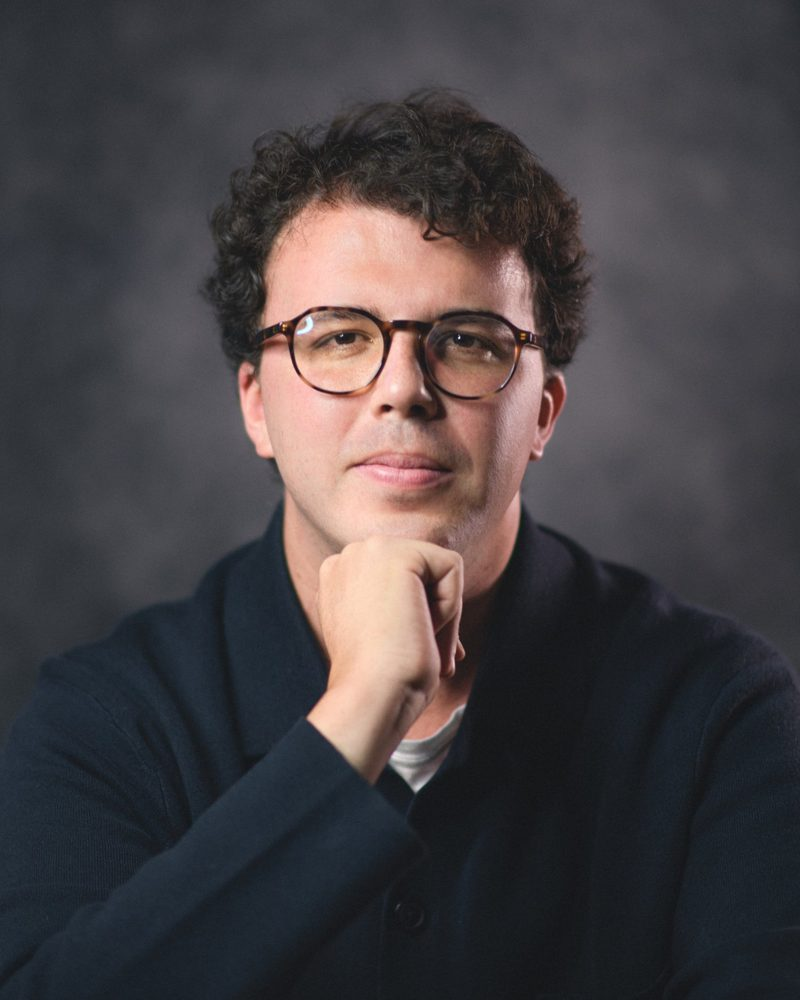
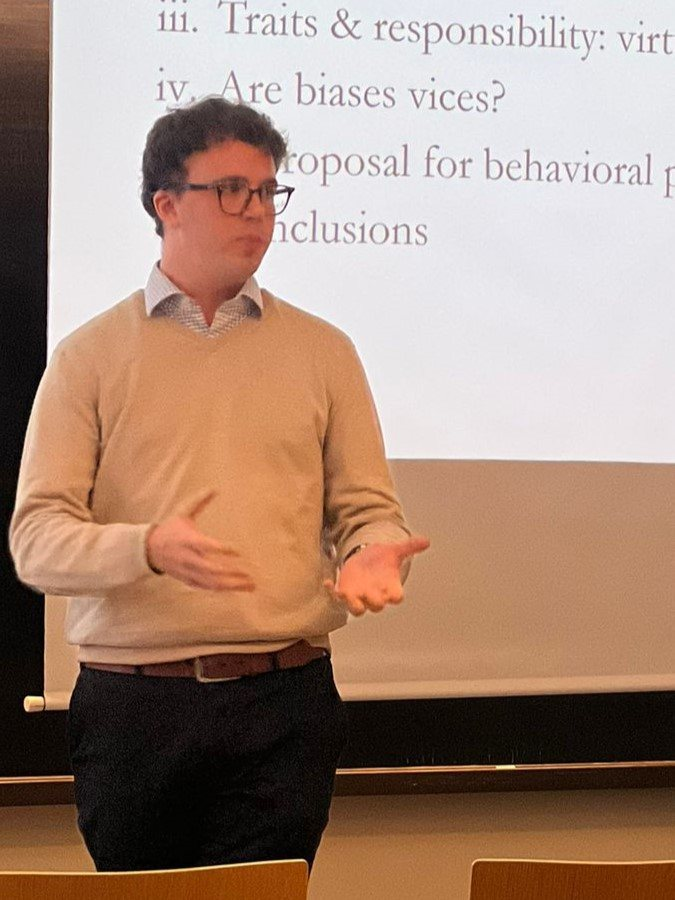
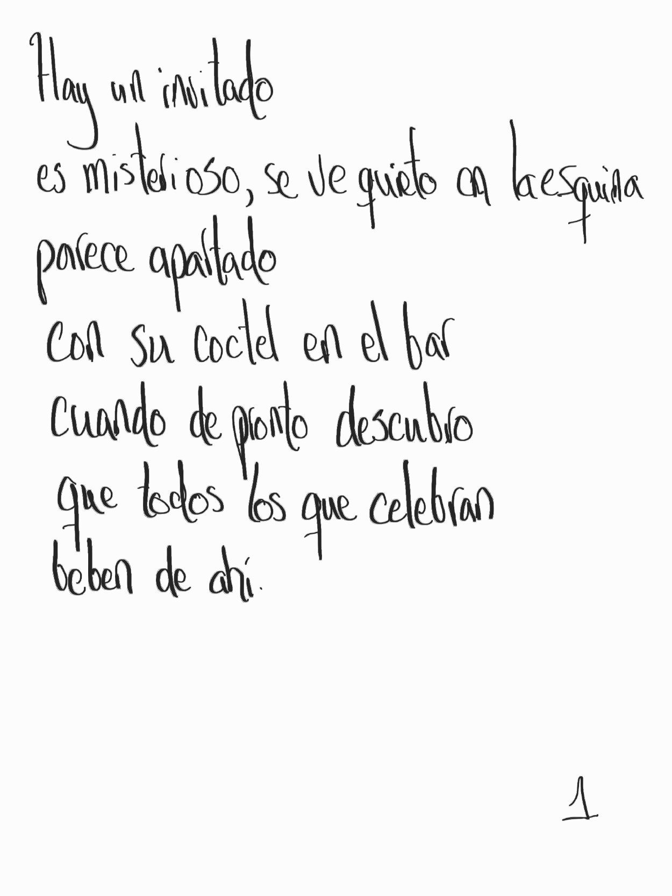
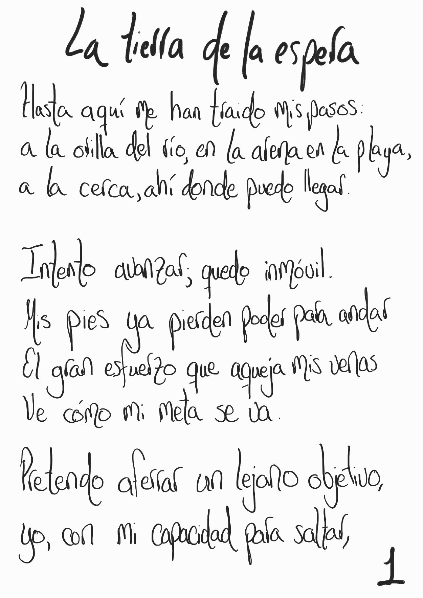
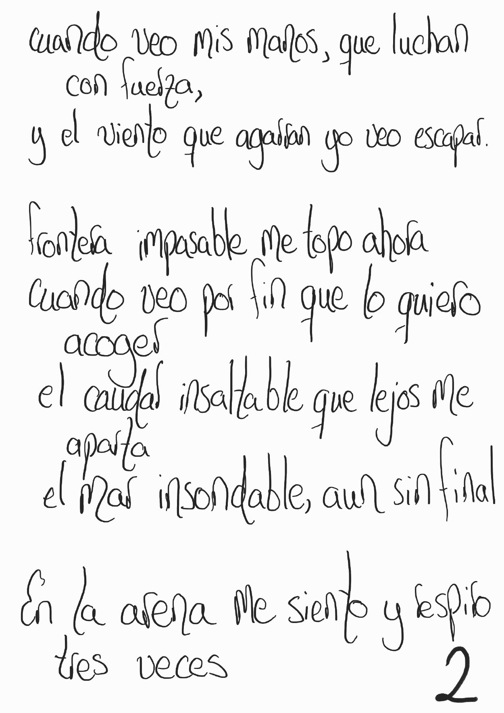
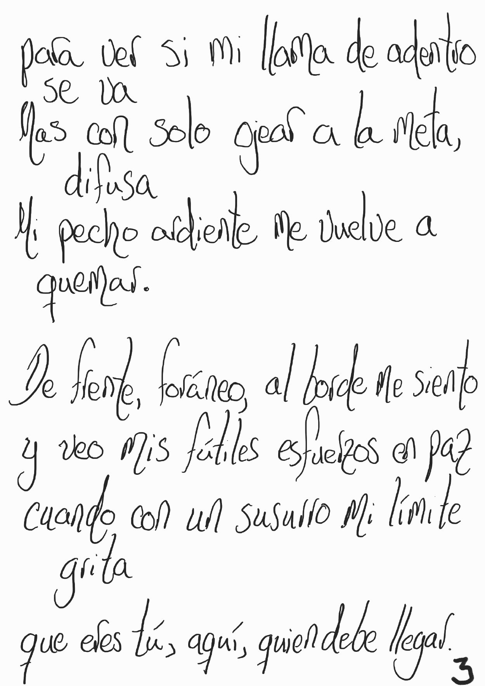

Daniel Zarama Rojas
Eyes (still) in development.
I am a PhD candidate in economics at the Bureau d'Économie Théorique et Appliquée (BETA; University of Lorraine, University of Strasbourg). My research focuses on the philosophy of economics, behavioral economics, and the epistemology of public policy. Currently, I study the significance of epistemic virtues and vices for economic decision-making and behavioral policy-design.
- Currently
- ATER (full-time lecturer), Université de Lorraine, 2025–2027
- Dissertation
- The Hazards of Psychology in Economics: A Virtue Epistemology Perspective, advised by Samuel Ferey

I am an economist interested in knowledge and social development. My main interests relate to epistemology, the theory of development, and economic policy, and I am keen on their interaction. My dissertation is an attempt to understand how the malleability of our reason constrains the role of policy. Specifically, I review recent debates concerning the psychology behind nudges, “boosts,” and free-market approaches from the perspective of virtue epistemology. By means of this approach, my thesis advances that our characterizations of bounded rationality offer major insights on the scope of markets and policy interventionism. In the future, I hope to explore the moral and cultural conditions under which market economies develop, and how they call for and shape the role of the state.
This is what one may actually call a personal website. Here I have hung not only what is related to my research but also other things that interest me: sketches of preliminary ideas, a few writings on films I appreciate, and humble attempts at poetry. They are all for you to read.
I profit most from the correction, confrontation, and challenges that people offer. I conceive my thought to be incomplete, so I hope the material here is treated as raw, and that you help me change it or go beyond what it currently says. Please do not hesitate to write to me with comments, objections, or impressions.

Research
Journal articles
- 2026
-
2019
El papel de la revista Desarrollo y Sociedad (1979–2018): evolución y desafíos presentes ES DOI ↗
Working papers
- 2025
-
2021
Humility’s Challenge: The Political Value of Diverse Individual Experience in F. A. Hayek’s Thought Paper ↗
Book review
-
2024
Review of Alain Herscovici, Value, Historicity, and Economic Epistemology: An Archaeology of Economic Science Review ↗
Theses
-
2022
Hayek’s Market: Adaptability, Institutionalization, and Limitations PDF ↗
CV
Education
- 2022–PhD in EconomicsBETA, Université de Lorraine – Université de Strasbourg. Advisor: Samuel Ferey
- 2021–2022Master 2, Économie et Sciences Humaines: Épistémologie, Méthodes, ThéoriesUniversité Paris 1 Panthéon-Sorbonne, mention très bien
- 2018–2020M.A. in EconomicsUniversidad de los Andes
- 2013–2018B.Sc. in EconomicsUniversidad de los Andes
Positions
- 2025–2027ATER (full-time lecturer)Faculté de Droit, Sciences Économiques et Gestion, Université de Lorraine
- Apr 2025Visiting scholarCentre d’économie de la Sorbonne, Université Paris 1 Panthéon-Sorbonne
- 2022–2025Assistant to the editorsJournal of the History of Economic Thought
- 2018–2022Research assistantFaculty of Economics, Universidad de los Andes
- 2021ConsultantFedesarrollo, Center for Economic and Social Research
- 2017–2018Research assistantBanco de la República de Colombia
Fellowships & awards
- 2025–2026Carl Menger FellowshipMercatus Center, George Mason University
- 2022–2025Doctoral fellowshipFrench Ministry of Higher Education and Research
- 2017Medal for outstanding results in the Saber Pro examColombian Ministry of Education
Recent presentations
- Jun 20266e Colloque Doctoral en Épistémologie et Histoire de la Pensée Économique (CoDEHPE)CES, Université Paris 1 Panthéon-Sorbonne, Paris
- May 20268th International Conference in Philosophy and EconomicsBETA, Université de Lorraine, Nancy
- May 2026Joint ESHET–HES ConferenceGREDEG, Université Côte d’Azur, Nice
- May 2026YSI Workshop on the Philosophy of EconomicsBETA, Université de Lorraine, Nancy
- Sep 202517th Biennial INEM ConferenceUniversity of Bayreuth
- May 202528th Annual ESHET ConferenceUniversità di Torino
Nineteen presentations since 2023; the full list is in the CV.
Academic service
- 2026Co-organizer, 8th International Conference in Philosophy and EconomicsUniversité de Lorraine
- 2024, 2026Co-organizer, YSI Workshop on the Philosophy of EconomicsUniversité de Reims (2024), Université de Lorraine (2026)
- 2024–Founder, Research Club in Law and EconomicsUniversité de Lorraine, for undergraduate students
- 2023–Founder, English Writing ClubBETA, for PhD candidates
- 2023–Co-organizer, annual gathering of PhD candidates in the history and philosophy of economicsCentre d’économie de la Sorbonne
Teaching
- 2023–Université de LorraineIntermediate Microeconomics; Introduction to Microeconomics; Introductory Macroeconomics; Introductory Economics; Topics in Microeconomics: Games and Experiments
- 2016–2021Universidad de los AndesDoing Economics; Introduction to Microeconomics; History of Economic Analysis; Evolution of Colombia’s Living Standards; History of Economic Thought; Ethics, Justice, and Public Policy
Languages
Spanish (native); English, French, Italian (fluent); Portuguese (intermediate); Japanese (basic).
Contact
I welcome comments, objections, and impressions, in whichever language you prefer.
BETA, Université de Lorraine, Nancy, France
Writings
“When I point, look at where I point, not at my finger.”
Warren McCulloch, in Antonio Damasio, Descartes’ Error ([1994] 2006), Vintage Books, p. 12
Outside the papers: early ideas and readings of films. Most of these are in Spanish and all of them are unfinished.
Sketches
Small manuscripts, less than drafts, that develop intuitions I have had or ideas that interest me. Some relate explicitly to my research; for others the relation is more implicit.
- ¿Qué es la educación ciudadana?Jan 2021 · ES
- Sobre la relación entre política y culturaSep 2020 · ES
- Sobre la relación entre la libertad individual, la cultura y el desarrollo socialAug 2020 · ES
On films
With some friends, I set out to value a couple of films we like, and wrote short introductory texts proposing an interpretive key to what I appreciate most in them.
- Your NameMakoto Shinkai, 2016 · with Sofía Arcila · ES, ITIntroducción ↗Introduzione ↗
- Midnight in ParisWoody Allen, 2011 · ESPreludio ↗Introducción ↗
Poems
“There are more things in heaven and earth, Horatio, than are dreamt of in your philosophy.”
Shakespeare, Hamlet, 1.5.167–8
Sometimes I try to express, through art, the way I discover and experience my life. These are humble attempts, still at a preliminary stage; some are kept as hand-written notes.
-
Viator2026 · EN
Read poem
In the underground for some time,
a lot of fellow humans.
Really beautiful: everyone’s travelling! -
Compagnie2025 · FR
Read poem
La distance semble t’éloigner ;
dans la brume, ta figure indistincte…
mon incapacité à la saisir
la rend évidente à moi -
El origen2021 · ES
Read manuscript

- El invitado2021 · ES
-
La tierra de la espera2020 · ES · 3 pages
Read manuscript


